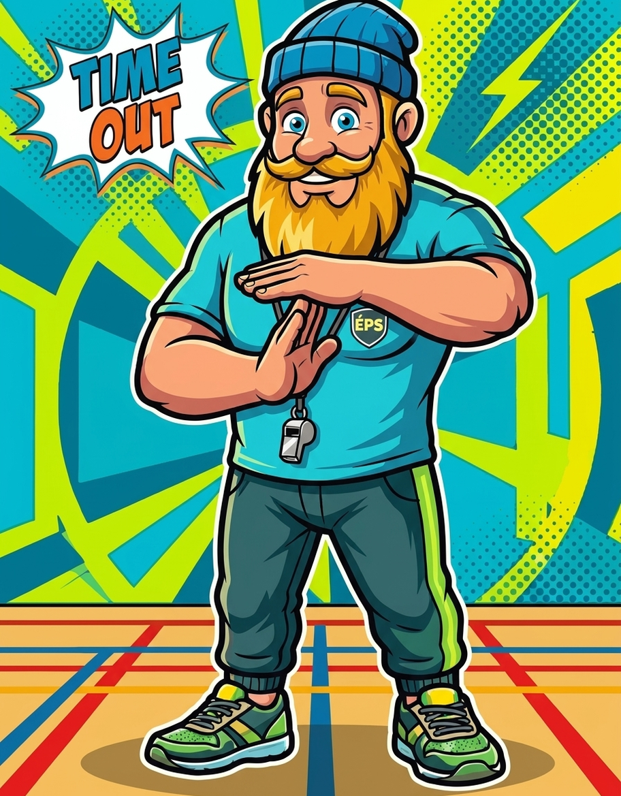
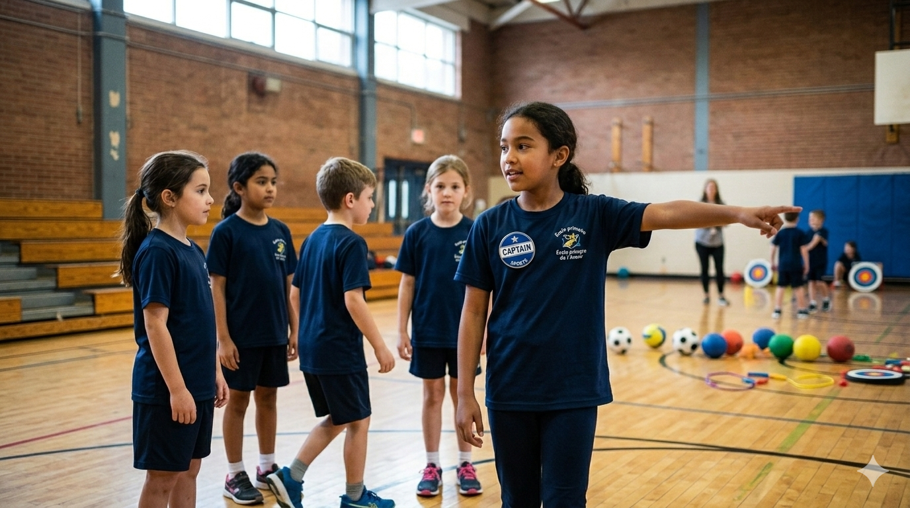
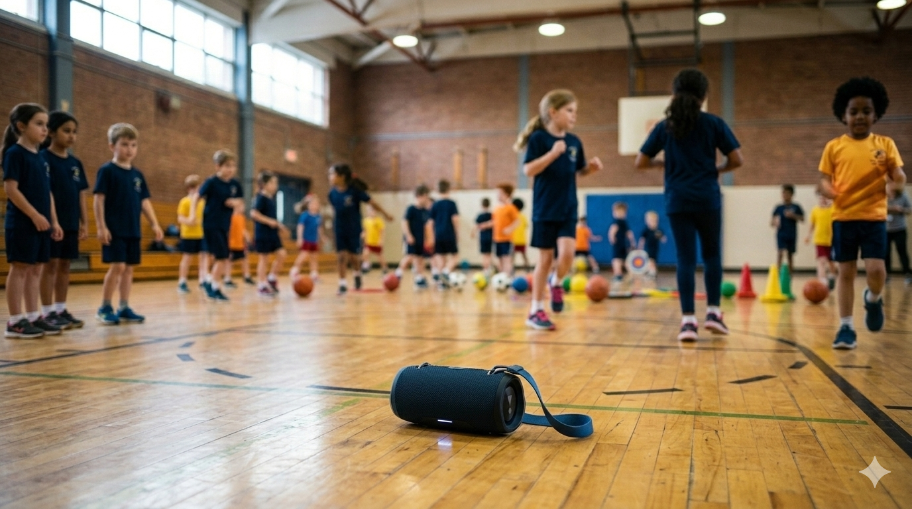

Tu connais ce moment précis. Le Dodgeball vient de se terminer. Tu annonces le prochain jeu. Et là — boum — le gymnase explose. Les ballons roulent partout, les voix montent d'un cran, deux élèves courent déjà vers le fond de la salle et ton beau plan de cours commence à déraper en direct.
Bienvenue dans le Syndrome du Gymnase en Chaos.
C'est le fléau numéro un des enseignants d'éducation physique, des éducateurs en service de garde et des coordonnateurs de camps de jour au Québec. Ces micro-fenêtres entre deux activités — les temps morts de transition — sont là où se gagne ou se perd une séance entière. Le niveau de bruit grimpe, l'indiscipline s'installe, et toi tu perds 5, 10, parfois 15 minutes précieuses de ton cours.
Mais voici la bonne nouvelle : cette réalité se règle avec 5 stratégies ultra-précises. Et non, ça ne prend pas un budget supplémentaire ni une formation de 3 jours.
🔴 Pourquoi les transitions font exploser ton groupe
Avant de plonger dans les solutions, comprends le mécanisme. Quand tu passes d'un jeu de ballons à une activité de locomotion, tu demandes à ton groupe de faire 4 choses en même temps :
1. Arrêter ce qu'ils font (souvent quelque chose d'excitant)
2. Ranger le matériel
3. Écouter les nouvelles consignes
4. Se repositionner dans l'espace
C'est cognitif et physique à la fois. Sans structure claire, le groupe comble ce vide par l'instinct — et l'instinct d'un groupe de 25 enfants en gymnase, c'est le chaos.
Le PFEQ (Programme de formation de l'école québécoise) parle de gestion efficace de l'environnement d'apprentissage. En clair : si la transition ne fait pas partie de ton plan, elle travaille contre toi.

✅ Secret #1 — Le Signal Visuel : Le Bûcheron Sportif prend la pose
Oublie le coup de sifflet classique. En 2025, ton groupe est bombardé de stimuli visuels toute la journée. Ce qui capte l'attention, c'est l'image forte et instinctive.
C'est là qu'entre en scène le Bûcheron Sportif — t-shirt bleu.
Dans la plateforme Zone Total Sport, ce personnage bûcheron possède des postures précises, chacune associée à un message. La posture de regroupement — bras croisés, regard direct, ancré dans le sol — devient ton signal universel.
Comment l'intégrer concrètement :
- Affiche la posture de regroupement sur le mur ou sur ton tableau numérique avant la transition
- Entraîne ton groupe dès la première semaine : "Quand vous voyez le Bûcheron dans cette posture, vous avez 20 secondes pour vous regrouper au centre"
- Répète la même image, la même posture, chaque fois — sans exception
Le cerveau de l'enfant (et de l'adulte) répond aux codes visuels répétitifs. C'est le principe du Pop Art : une image forte, répétée, crée un réflexe. Tu n'as plus besoin de crier. L'image parle à ta place.

💡 Pro Tip : Les éducateurs en service de garde qui utilisent ce signal rapportent une réduction du temps de regroupement de 40 à 60 % dès la deuxième semaine d'utilisation.
✅ Secret #2 — La Boîte à Outils : Transformer le rangement en défi chronométré
Le rangement est pénible parce qu'il est perçu comme une punition. Ton groupe vient de s'amuser, et maintenant tu lui demandes de ramasser. Psychologiquement, c'est une descente abrupte.
La solution ? Changer le cadre narratif. Le rangement n'est plus une corvée — c'est un défi.
La Boîte à Outils Zone Total Sport inclut un minuteur de transition conçu spécifiquement pour les environnements ÉPS et service de garde. Voici comment l'utiliser :
Le Protocole du Défi Chronométré :
1. Avant la fin de l'activité, annonce : "Dans 60 secondes, le chrono démarre. Votre mission : tout le matériel rangé avant le signal."
2. Lance le minuteur visible par tout le groupe
3. Célèbre le résultat — peu importe le temps — avec un feedback immédiat
4. Note le record et défie le groupe de le battre la prochaine fois
Ce mécanisme s'appuie sur la gamification — un principe pédagogique solide qui transforme n'importe quelle tâche administrative en moment d'engagement. Le bruit ne disparaît pas complètement, mais il change de nature : il devient de l'énergie focalisée plutôt que du désordre.
Applicable en ÉPS, en service de garde ET en camp de jour. Le contexte change, l'outil reste le même.
✅ Secret #3 — L'Organisation Spatiale : Classer par Domaine pour éliminer les déplacements inutiles
Voici une vérité que peu de gens formulent clairement : la moitié du chaos de transition vient de la logistique, pas du comportement.
Quand un élève doit traverser tout le gymnase pour aller porter un ballon, puis revenir chercher un cerceau, puis repartir chercher une corde — tu as créé 6 déplacements inutiles par élève. Multiplie par 25 élèves. C'est 150 déplacements chaotiques avant même que la prochaine activité commence.
La solution : le système de classement par Domaine.
Dans la plateforme Zone Total Sport, les jeux sont organisés selon des domaines d'activité qui correspondent directement au type de matériel utilisé :
Domaine Matériel associé Zone dans le gymnase
🏐 Manipulation Ballons, cerceaux, frisbees Bacs côté gauche
🏃 Locomotion Cônes, lignes, marqueurs Zone centrale
🤝 Coopération Cordes, parachutes Espace arrière

🎯 Précision Cibles, quilles Mur de droite
L'implantation en 3 étapes :
1. Cartographie ton espace : Identifie 3 à 4 zones fixes dans ton gymnase ou ta salle
2. Code couleur le matériel : Bacs de couleurs différentes par domaine
3. Implique le groupe : Laisse les élèves "propriétaires" de leur zone de rangement
Résultat : au moment de la transition, chaque élève sait exactement où aller et quoi faire. Les déplacements sont réduits, le bruit baisse naturellement, et toi tu peux déjà préparer l'explication de la prochaine activité.
✅ Secret #4 — Les Capitaines de Transition : Déléguer pour mieux régner
Voici le secret que les enseignants d'expérience utilisent sans toujours l'enseigner : tu n'as pas à tout gérer seul.
Le concept du Capitaine de Transition est simple et redoutablement efficace. À chaque séance, tu assignes 2 à 3 élèves à des rôles précis pendant les transitions :
Rôle Mission
🧢 Le Capitaine des Bacs Responsable du rangement du matériel dans la bonne zone
📣 Le Capitaine du Silence Donne le signal quand son équipe est prête et silencieuse
🗺️ Le Capitaine des Zones Guide les coéquipiers vers le bon espace pour la prochaine activité
Pourquoi ça marche :
Les enfants et adolescents répondent différemment aux consignes venant d'un pair qu'à celles venant d'un adulte. Quand c'est leur capitaine qui donne le signal, le groupe se mobilise plus rapidement — c'est une dynamique sociale naturelle que tu utilises à ton avantage.
En camp de jour, ce système crée également de l'engagement et de la fierté. Les moniteurs témoignent régulièrement que les élèves demandent à avoir un rôle de capitaine. Tu transformes la transition en opportunité de leadership.

💡 Pro Tip : Fais tourner les rôles chaque semaine pour que tous les élèves vivent l'expérience. Les anciens capitaines deviennent naturellement les meilleurs membres du groupe — ils comprennent le système de l'intérieur.
✅ Secret #5 — La Trame Sonore : La musique comme chronomètre invisible
Le cinquième secret est celui qui crée le plus d'effet "wow" la première fois que tu l'utilises. Et pourtant, il est d'une simplicité déconcertante.
La musique est le meilleur minuteur qui existe — parce qu'elle est omniprésente, non-négociable et émotionnellement engageante.
Le principe : tu crées une playlist de transition de 60 à 90 secondes. Quand la musique joue = transition en cours. Quand la musique s'arrête = tout le monde est en place, silencieux, prêt.

Comment construire ta playlist de transition :
1. Choisis un morceau dynamique mais sans paroles (pour éviter les distractions)
2. Coupe-le exactement à 75 secondes (le temps idéal pour une transition complète)
3. Utilise toujours le même morceau — ton groupe doit l'associer automatiquement à l'action de transitionner
4. Avec le temps, les premières notes de la chanson déclenchent le réflexe de rangement sans que tu aies à dire un mot
En service de garde et en camp de jour, cette technique est particulièrement puissante parce qu'elle fonctionne même dans des espaces bruyants où ta voix se perd. La musique perce le bruit ambiant là où les consignes verbales échouent.
Bonus : Après quelques semaines, tu peux introduire une musique de célébration différente pour les transitions record. Le groupe apprend à distinguer les deux sons — et à tout faire pour déclencher la chanson "victoire".
💡 Pro Tip : Des plateformes comme YouTube Music ou Spotify permettent de créer des playlists gratuites. Un petit haut-parleur Bluetooth portable suffit — pas besoin d'un système de son intégré au gymnase.
🎯 La formule complète d'une transition de pro
Combine les 5 secrets et tu obtiens un protocole imbattable :
🔵 Signal visuel (le Bûcheron prend la pose)
→ 🎵 Trame sonore (la musique de transition démarre)
→ 🧢 Capitaines activés (chacun connaît son rôle)
→ ⏱️ Défi chronométré (rangement en mode compétition)
→ 📦 Rangement par domaine (chacun sait où aller)
→ ✅ Groupe rassemblé, calme, prêt (en moins de 90 secondes)
C'est reproductible. C'est enseignable aux suppléants. C'est applicable que tu sois en ÉPS primaire, en service de garde ou en camp de jour estival. Et surtout — ça se met en place dès demain matin.
🚀 Prochaine étape
Le Syndrome du Gymnase en Chaos n'est pas une fatalité. C'est un problème de design — et comme tout problème de design, il a une solution structurée.
Découvrez nos outils de transition dans la Boîte à Outils de Zone Total Sport — minuteurs, fiches de jeux organisées par domaine, signaux visuels avec le Bûcheron Sportif et bien plus, prêts à imprimer ou projeter dès aujourd'hui.
- Joey Root
- 10 mars
- 6 min de lecture
- éducation physique Québec
- transitions en gymnase
- gestion de classe ÉPS
- service de garde
- camp de jour
- PFEQ
- gestion de groupe
- jeux de ballons